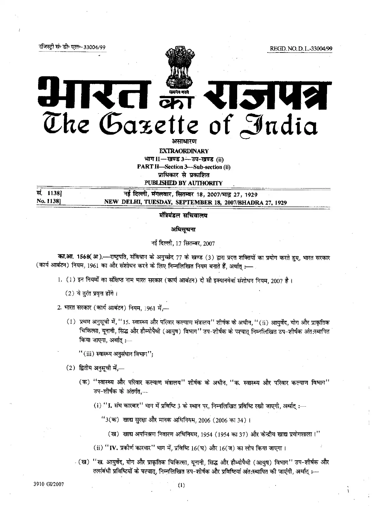
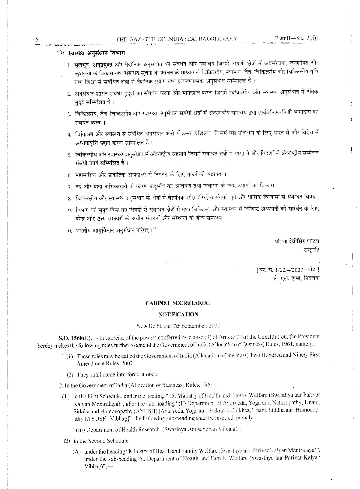
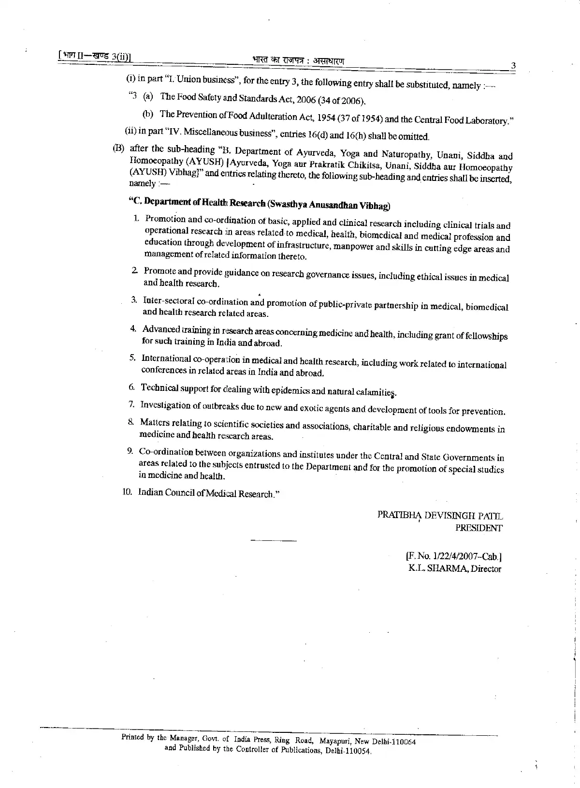

Amendment #291 (S.O. 1568(E), 2007)
4 changes: 1 to the First Schedule, 3 to the Second Schedule. 4 applied
What it did to the ministries
- grewMinistry of Health and Family Welfare grows from 43 to 53 subjects change 1, 2, 3, 4 · histories: Health and Family Welfare
The order, page by page
Page 1 of 3

Page 2 of 3

1after Schedule 1 › Ministry of Health and Family Welfare › Department of Ayurveda, Yoga and Naturopathy, Unani, Siddha and Homoeopathy (AYUSH)
- iii. Department of Health Research
applied at schedule 1 › ministry 15 › department iii in the Rules after #291
Page 3 of 3

234Schedule 2 › Ministry of Health and Family Welfare › Department of Health and Family Welfare › I. Union business › entry 3
- 3.
- a. The Food Safety and Standards Act, 2006 (34 of 2006).
- b. The Prevention of Food Adulteration Act, 1954 (37 of 1954) and the Central Food Laboratory.
applied at schedule 2 › ministry MINISTRY OF HEALTH AND FAMILY WELFARE › department A › group_heading I › entry 3 in the Rules after #291
Schedule 2 › Ministry of Health and Family Welfare › Department of Health and Family Welfare › IV. Miscellaneous business › entry 16 › item d; Schedule 2 › Ministry of Health and Family Welfare › Department of Health and Family Welfare › IV. Miscellaneous business › entry 16 › item h
applied at schedule 2 › ministry MINISTRY OF HEALTH AND FAMILY WELFARE › department A › group_heading IV › entry 16 › item d in the Rules after #291
after Schedule 2 › Ministry of Health and Family Welfare › Department of Ayurveda, Yoga and Naturopathy, Unani, Siddha and Homoeopathy (AYUSH)
- C. Department of Health Research
- 1. Promotion and co-ordination of basic, applied and clinical research including clinical trials and operational research in areas related to medical, health, biomedical and medical profession and education through development of infrastructure, manpower and skills in cutting edge areas and…
- 2. Promote and provide guidance on research governance issues, including ethical issues in medical and health research.
- 3. Inter-sectoral co-ordination and promotion of public-private partnership in medical, biomedical and health research related areas.
- 4. Advanced training in research areas concerning medicine and health, including grant of fellowships for such training in India and abroad.
- 5. International co-operation in medical and health research, including work related to international conferences in related areas in India and abroad.
and 5 more
- 6. Technical support for dealing with epidemics and natural calamities.
- 7. Investigation of outbreaks due to new and exotic agents and development of tools for prevention.
- 8. Matters relating to scientific societies and associations, charitable and religious endowments in medicine and health research areas.
- 9. Co-ordination between organizations and institutes under the Central and State Governments in areas related to the subjects entrusted to the Department and for the promotion of special studies in medicine and health.
- 10. Indian Council of Medical Research.
applied at schedule 2 › ministry MINISTRY OF HEALTH AND FAMILY WELFARE › department C in the Rules after #291
How this document was read
Edits to the reading
| Date | By | Edit | Before → after |
|---|---|---|---|
| 9 November 2026 | mukundesh | word corrected | |
| 9 November 2026 | mukundesh | word corrected |
From the Government of India (Allocation of Business) Rules, 1961 and their amendments, as published by the Cabinet Secretariat (cabsec.gov.in), read by orgpedia. The readings of the older scanned gazettes have known gaps.